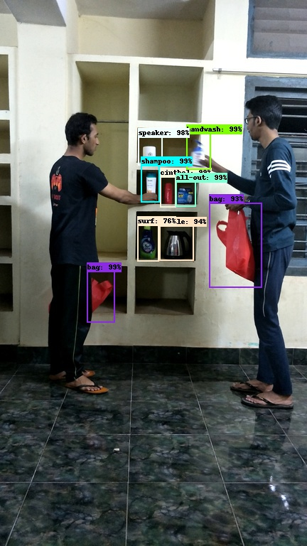
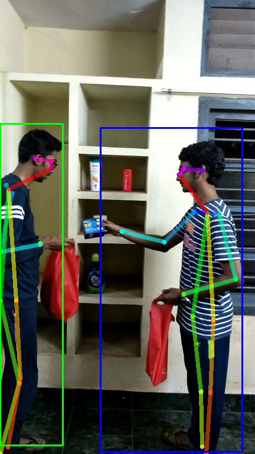
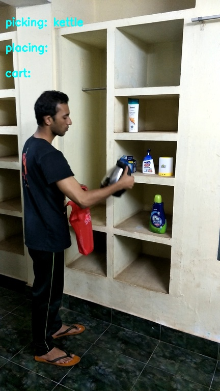
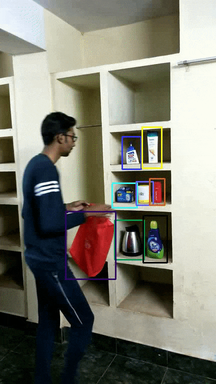

Introduction
MLabs is a machine learning-focused accelerator program initiated by NITC alumni. It is aimed at third year students at NITC and intends to enable students to build cutting-edge ML-based products. The framework of the program incorporates technical mentorship from highly accomplished alumni, cohesion with current academic requirements and appropriate guidance for evaluating entrepreneurship as a viable career option.
The first cohort of MLabs started their journey in 2018 with 3 students. In their 6th semester, they started the program by attempting a computer vision problem (Human pose estimation), with the help of MLabs mentors and conveners. They took this as their major project in 4th year and brought considerable improvements in the project by developing an automated checkout system. Here's a peek into their projects
Real-time Exercise Prediction
Automated Checkout Experience at Retail Stores



